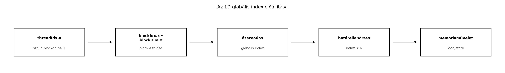

Amikor egy kernelt elindítunk, a hardver nem ismeri a feladat logikai
szerkezetét. Csak azt látja, hogy egy rácsnyi (grid) blokkot és
blokkonként egy adott számú szálat kell ütemeznie. A programozó
feladata, hogy ebből a hierarchiából egy lineáris, az adathoz illeszkedő
azonosítót képezzen. Ez az alfejezet ezt a leképezést tárgyalja 1D-s
tömbök esetén. A cél annak megértése, hogyan válik a hardver által
biztosított beépített változókból – threadIdx,
blockIdx, blockDim (és gridDim) –
a feldolgozandó elem globális pozíciója, és miért nélkülözhetetlen a
határellenőrzés (boundary check), ha a tömb mérete nem osztható a
blokkmérettel.
A fejezetben szereplő kódok CUDA C++ nyelvűek, és az itt bemutatott kernel „tankönyvi” jellegű: a hangsúly az indexelésen van, nem a memória-átviteli vagy futási sebességen. A labor feladata éppen ezért nem egy nagy teljesítményű számítás, hanem egy ellenőrizhető, kis méretű példa, amelynél a várt és a mért eredmény pontosan összevethető.

A CUDA végrehajtási modellje három szintre bontja a párhuzamos munkát: a szálak egy blokkba szerveződnek, a blokkok pedig egy rácsba. A kernel belsejében a szál pozícióját négy beépített, csak olvasható változóból tudhatjuk meg:
threadIdx – a szál indexe a blokkon belül. Típusa
uint3 (három unsigned int komponens):
threadIdx.x, threadIdx.y,
threadIdx.z. 1D-s indításnál a y és
z komponens értéke 0, az x komponens pedig
0 és blockDim.x - 1 közé esik.blockIdx – annak a blokknak az indexe, amelyhez a szál
tartozik, a rácson belül. Szintén uint3 típusú, 1D-s
indításnál a blockIdx.x értéke 0 és
gridDim.x - 1 között változik.blockDim – (típusa dim3) a blokk mérete,
tehát az egy blokkban található szálak száma dimenziónként. 1D-s
indításnál csak a blockDim.x fontos, a többi komponens
1.gridDim – (típusa dim3) a rács mérete,
tehát a blokkok száma dimenziónként. 1D-s indításnál a
gridDim.x adja meg, hány blokk indult.Ezek a változók minden szálban azonos módon olvashatók, de az értékük
szálanként eltérő. Például egy
<<<4, 256>>> indításnál a
gridDim.x értéke 4, a blockDim.x értéke 256; a
blockIdx.x az egyes blokkokban 0, 1, 2 vagy 3, a
threadIdx.x pedig minden blokkban 0 és 255 között fut. A
ténylegesen elindított szálak száma ebben a példában 4 * 256 = 1024.
A hardver nem ígéri meg, hogy a blokkok sorrendben hajtódnak végre,
és azt sem, hogy egy blokkon belül a szálak ütemezése milyen sorrendű.
Az indexszámításnak ezért mindig determinisztikusnak
kell lennie, és kizárólag a fenti beépített változóktól, valamint a
kernel argumentumaitól szabad függenie. Ha egy szál a
threadIdx.x-ét ismeri, az még nem elegendő; szüksége van a
blockIdx.x-re is ahhoz, hogy a rács összes szálán belül
egyedi pozíciót kapjon.
A legegyszerűbb és leggyakrabban használt leképezés a következő:
globalIdx = blockIdx.x * blockDim.x + threadIdx.xEz a képlet a rácson belüli blokkokat egymás után elhelyezve egy
virtuális, lineáris száltartományt hoz létre. Ha a
blockDim.x értéke B, akkor a 0. blokk szálai a
0..B-1, az 1. blokk szálai a B..2B-1
intervallumba esnek, és így tovább. A
blockIdx.x * blockDim.x kifejezés tehát megadja az adott
blokk kezdő indexét, a threadIdx.x pedig ezen belül a szál
helyét.
Az alábbi ábra a fejezet kulcspéldáján
(,
<<<4, 256>>>) mutatja a (blokk, szál) →
index leképezést, a határellenőrzés hatását és a felcserélt képlet
hibáját (lásd a „Gyakori hibák” 1. pontját).
<<<4, 256>>> esetén: helyes és felcserélt
képletÉrdemes hangsúlyozni, hogy a szorzat típusa 1D-s indításnál a
beépített változók miatt unsigned int. Bár a gyakorlatban a
grid és blokk mérete rendszerint jóval kisebb, mint az
unsigned int felső határa, nagy adathalmazoknál a
blockIdx.x * blockDim.x kifejezés túlcsordulhat. Például ha
gridDim.x a megengedett maximum közelében van (nagyjából
2,1 milliárd blokk) és blockDim.x 1024, a szorzat
meghaladja a 32 bites tartományt. Emiatt erősen ajánlott az indexet
legalább size_t típusra kasztolni, mielőtt nagy tömbökhöz
használjuk. A modern CUDA C++ kódokban a következő minta terjedt el:
size_t idx = static_cast<size_t>(blockIdx.x) * blockDim.x + threadIdx.x;A static_cast miatt a szorzás már 64 bites unsigned
értéken történik, így elkerülhető a csendes túlcsordulás. Ez a részlet
aprónak tűnik, de az 1D-s indexelés egyik leggyakrabban elfelejtett
buktatója. A képlet logikája természetesen ugyanaz marad, csak a típus
változik.
A kernel gyakran egyetlen sorban használja ezt a globális indexet.
Például egy olyan kernel, amely egy n hosszú tömb
i-edik elemét az indexének megfelelő értékkel tölti fel,
így néz ki:
__global__ void fillIndices(int* out, size_t n)
{
size_t idx = static_cast<size_t>(blockIdx.x) * blockDim.x + threadIdx.x;
if (idx < n) {
out[idx] = static_cast<int>(idx);
}
}Itt a szálak egyértelműen leképezik a rácsbeli pozíciójukat a tömb
egy-egy elemére. A idx < n feltétel a határellenőrzés,
amelyre a következő szakaszban térünk ki.
Fontos megjegyezni, hogy a globális index nem azonos
a szál ütemezési sorszámával. A hardver a szálakat nem feltétlenül a
idx növekvő sorrendjében hajtja végre, és a blokkok közötti
sorrend sem meghatározott. A idx kizárólag a programozó
számára biztosít egy konzisztens, az adathoz köthető azonosítót. Ezért
mondjuk azt, hogy a blockIdx, blockDim és
threadIdx a kernel logikai koordinátái, míg a hardver
tényleges végrehajtási rendje a scheduler feladata.
Ritkán fordul elő, hogy a feldolgozandó tömb hossza pontosan osztható
a választott blokkmérettel. Ha N nem többszöröse
blockDim.x-nek, az utolsó blokkban több szál indul, mint
ahány elem feldolgozásra vár. Ilyenkor a globális index egy része kívül
esik a [0, N-1] intervallumon. Ha a kernel nem ellenőrzi a
határt, ezek a szálak érvénytelen memóriacímet érhetnek el.
Klasszikus példa: legyen N = 1000, a blokkméret pedig
256. A szükséges blokkok számát a felfelé kerekített
osztással kapjuk:
blocksPerGrid = ceil(N / 256) = ceil(3.906) = 4A 4. blokkban, amelynek blockIdx.x értéke 3, a globális
indexek a 768 és 1023 közötti tartományba
esnek. Azonban a tömb csak a 0..999 indexeket tartalmazza.
A 1000..1023 indexekre történő írás (vagy olvasás) kívül
esik a lefoglalt memóriaterületen, ami definiálatlan viselkedés. Kis
túlírásnál a hardver gyakran nem jelez hibát (a
cudaMalloc nagyobb egységekben foglal, így a túlírás egy
szomszédos puffert írhat felül csendben); nagyobb túlindexelésnél
an illegal memory access was encountered hibát kapunk. A
hibát megbízhatóan a
compute-sanitizer --tool memcheck ./program mutatja ki
(„Invalid global write of size 4”). A hiba nem mindig
azonnal jelentkezik, ezért a diagnosztika később is nehéz lehet.
A megoldás a kernelben egyetlen feltételes utasítás:
if (idx < n) {
// valódi munka, pl. out[idx] = idx;
}Ez a boundary check biztosítja, hogy csak azok a szálak férnek hozzá a tömbhöz, amelyekhez valóban tartozik elem. A feltétel hamis ágában a szál nem végez memóriaműveletet, és a kernel végére ér; enélkül az érvénytelen indexű szálak is írnának. A költség rendszerint elhanyagolható, és a korrektség szempontjából kötelező.
A boundary check hatására a fenti példában a 4. blokk utolsó 24 szálja tétlen marad. Ez nem „tökéletes” erőforrás-kihasználás, de helyes. A grid-stride loop technika (lásd az 5.3 alfejezetet és a 6.3 alfejezetet) ezt a tétlenséget nem csökkenti, hanem a launch konfigurációt teszi függetlenné az adatmérettől: a szálak egymás után több elemet dolgoznak fel, így a blokkok száma nem függ az adat méretétől. Ebben a fejezetben azonban az egyszerű, egy elem egy szálhoz rendelés a cél, ezért a boundary check marad a központi eszköz.
Fontos, hogy a boundary check a globális indexre
vonatkozik, nem a threadIdx-re vagy a
blockIdx-re. Az if (threadIdx.x < n)
feltétel például hibás, mert a threadIdx.x minden blokkban
0..blockDim.x-1 között mozog, így az n
értékétől függően vagy túl keveset, vagy túl sokat engedne.
Hasonlóképpen az if (blockIdx.x < n) sem helyes, mert a
blokk indexe nem azonos az elem indexével.
Nézzünk egy konkrét, futtatható példát. Az alábbi kernel egy
N elemű float tömböt skáláz egy konstanssal. A
host oldali N tetszőleges pozitív egész lehet, a kernel a
boundary check miatt minden esetben korrekt marad:
__global__ void scaleVector(const float* in, float* out, float alpha, size_t n)
{
size_t idx = static_cast<size_t>(blockIdx.x) * blockDim.x + threadIdx.x;
if (idx < n) {
out[idx] = alpha * in[idx];
}
}A kernel egyetlen szálat rendel egyetlen tömbelemhez, és a
idx < n feltétel levágja a felesleges szálakat. Ha
n nagy, a host oldali blokkszámításnak is helyesnek kell
lennie.
A kernel indításához a host oldalon meg kell adni a rács és a blokk méretét. A leggyakoribb minta 1D-s feldolgozásnál:
threadsPerBlock = 256.size_t blocksPerGrid = (n + threadsPerBlock - 1) / threadsPerBlock;scaleVector<<<blocksPerGrid, threadsPerBlock>>>(d_in, d_out, alpha, n);A blocksPerGrid számításánál az egész osztás
természetéből adódóan a n + threadsPerBlock - 1 kifejezés
biztosítja a felfelé kerekítést. Például n = 1000,
threadsPerBlock = 256 esetén
(1000 + 255) / 256 = 4, míg a sima 1000 / 256
3-at adna, ami nem lenne elegendő.
Fontos ellenőrizni, hogy a kapott blocksPerGrid nem lépi
túl a hardver gridDim.x korlátját. A mai GPU-kon ez a
korlát 2^31 - 1 (nagyjából 2,1 milliárd) blokk, ami a
legtöbb valós adatnál bőven elég. Ha az adat mérete ezt meghaladná, a
grid-stride loop vagy többdimenziós grid válik szükségessé. Emellett a
threadsPerBlock nem lehet nagyobb, mint a hardverenként
eltérő maximális szálszám (általában 1024). A
cudaGetDeviceProperties függvénnyel kérdezhető le a pontos
korlát.
A <<<…>>> konfigurációban a rács- és
blokkméret dim3 típusú (három unsigned int
komponens); egyetlen egész szám megadásakor az x komponens
kap értéket, a többi 1. Ha a számítás size_t típussal
történt, a szűkítés implicit és némán csonkít, ezért explicit kasztolás
(és tartományellenőrzés) szükséges:
int blocksPerGrid = static_cast<int>((n + threadsPerBlock - 1) / threadsPerBlock);Ez a kasztolás biztonságos, amíg blocksPerGrid a fent
említett korlát alatt marad. Nagy n esetén azonban
előbb-utóbb elérjük a 32 bites korlátot; ekkor a grid-stride loop a
fenntartható megoldás.
Az 1D-s globális indexszámítás egyszerűnek tűnik, mégis számos jellegzetes hiba forrása. Az alábbiak a leggyakoribbak.
1. A szorzás és összeadás sorrendjének
felcserélése.
Hibás: idx = threadIdx.x * blockDim.x + blockIdx.x.
Helyes: idx = blockIdx.x * blockDim.x + threadIdx.x.
A hibás változatban a threadIdx.x * blockDim.x kifejezés a
blokkon belüli szál pozícióját szorozza meg a blokk méretével, így az
indexek szétszórtak, a tömb nagy részét nem fedik, és n-et
meghaladó értékeket is adnak (a
<<<4, 256>>> példában a legnagyobb index
255 · 256 + 3 = 65 283; a határellenőrzés ezeket kiszűri, a többi elem
kimarad). Példa: blockDim.x = 256 esetén a 0. blokk 1.
szálának hibás indexe 256, miközben a helyes index
1 lenne. Ütközés (két szál ugyanarra az elemre) csak akkor
jön létre, ha gridDim.x > blockDim.x. Ez a hiba gyakran
nehezen észrevehető, mert a kernel fut, de az eredmény hiányos és a
memória-hozzáférések szétszórtak.
2. A boundary check elhagyása.
Minden olyan kernelben, ahol a szálak száma nem azonos a tömb hosszával
(azaz n nem többszöröse a blokkméretnek), kötelező az
if (idx < n) feltétel. Ennek elhagyása a legtöbb esetben
érvénytelen memória-hozzáféréshez vezet, amelyet a
compute-sanitizer jelez (a régi cuda-memcheck
a CUDA 12-es toolkitekben már nem elérhető). A hiba tünete lehet a nem
determinisztikus crash, az eldurvult adatok vagy a csendes korrupció. A
javítás egyszerű, de a figyelmetlenség sok időt emészthet fel.
3. Az index típusának túlcsordulása.
A blockIdx.x * blockDim.x kifejezés
unsigned int típusú, és nagy gridnél túlcsordulhat. A már
említett static_cast<size_t> megoldás mellett fontos,
hogy a kernel argumentumai is megfelelő típusúak legyenek. Ha a kernel
int n paramétert vár, de a host oldalon size_t
érkezik, a 64 bites érték 32 bitesre csonkulhat. A konzisztencia
érdekében a kernel paramétere és a host oldali számítás is
size_t legyen.
4. A blokkméret helytelen megválasztása.
Bár a hardver megenged bizonyos határokat (például blokkonként maximum
1024 szál), a gyakorlatban a 128 vagy 256 a szokásos kiindulópont (lásd
5.3.2); a nagyobb blokk (512, 1024) a foglaltságot és a regiszterkeretet
is érintheti. A rossz blokkméret nem feltétlenül okoz indexelési hibát,
de befolyásolja a teljesítményt. Ebben a fejezetben a korrektségre
koncentrálunk, a teljesítményoptimalizálás a későbbi részek témája.
5. A gridDim és blockDim
összekeverése.
A globális index képletében kizárólag a blockDim.x
szerepel, nem a gridDim.x. A gridDim.x azt
adja meg, hány blokk indult, de az index kiszámításához a blokkon belüli
szálak számára van szükség. A kettő felcserélése szintén hibás
indexeléshez vezet.
6. Az int n paraméter és a hibás
kerekítés.
Ha a kernel int n paramétert vár, de a host oldalon
size_t érkezik, a 64 bites érték némán 32 bitesre csonkul
(2^31 elem fölött negatív vagy téves n). Hasonlóan hibás az
n / threadsPerBlock egész osztás, amely a felfelé kerekítés
nélkül kihagyja az utolsó, részleges blokkot (lásd fent: 1000 elem,
256-os blokk, 3 blokk esetén a 768–999 elemek feldolgozatlanok
maradnak).
A fejezet laborja egy olyan CUDA C++ program, amely egy
N hosszú egész tömböt tölt fel a globális index értékével:
a[i] = i. A feladat célja, hogy a hallgató a saját
környezetében futtassa a kódot, ellenőrizze a tömb tartalmát, és
rögzítse a mérési körülményeket. A kernel szándékosan egyszerű, hogy a
figyelem az indexelésre és a boundary checkre irányuljon.
A labor előtt győződjön meg arról, hogy a CUDA Toolkit és a driver
telepítve van, és a nvidia-smi parancs elérhető. A kódot
izolált környezetben futtassa, mert a hibás kernel eszközleállást
okozhat; állítson be timeoutot és visszaállítási tervet.
Az alábbi kód egy teljes, fordítható CUDA C++ program. A
hibakezeléshez egy egyszerű makrót használ, amely minden CUDA API hívás
után ellenőrzi a hibakódot. A kernel a fillIndices nevet
viseli, és a globális indexet a fent tárgyalt módon számítja ki.
// fill_indices.cu
// Fordítás: nvcc -std=c++17 -O3 -o fill_indices fill_indices.cu
#include <cuda_runtime.h>
#include <iostream>
#include <vector>
#include <algorithm>
#include <cmath>
#include <cstdlib>
// Hibakezelő makró
#define CUDA_CHECK(call) \
do { \
cudaError_t err = (call); \
if (err != cudaSuccess) { \
std::cerr << "CUDA error at " << __FILE__ << ":" << __LINE__ \
<< " - " << cudaGetErrorString(err) << std::endl; \
std::exit(EXIT_FAILURE); \
} \
} while (0)
// Kernel: a tömb i-edik elemét i-vel tölti fel
__global__ void fillIndices(int* out, size_t n)
{
size_t idx = static_cast<size_t>(blockIdx.x) * blockDim.x + threadIdx.x;
if (idx < n) {
out[idx] = static_cast<int>(idx);
}
}
int main()
{
// A feldolgozandó elemek száma
const size_t n = 1000;
// Blokkméret és rács méret
const int threadsPerBlock = 256;
const int blocksPerGrid = static_cast<int>((n + threadsPerBlock - 1) / threadsPerBlock);
// Eszköz oldali memória
int* d_out = nullptr;
CUDA_CHECK(cudaMalloc(&d_out, n * sizeof(int)));
// Kernel indítás
fillIndices<<<blocksPerGrid, threadsPerBlock>>>(d_out, n);
CUDA_CHECK(cudaGetLastError()); // kernel launch hibák ellenőrzése
CUDA_CHECK(cudaDeviceSynchronize()); // szinkronizáció a másolás előtt
// Időmérés: 5 warm-up + 20 mért futás, cudaEvent-tel (a futások idempotensek)
cudaEvent_t start, stop;
CUDA_CHECK(cudaEventCreate(&start));
CUDA_CHECK(cudaEventCreate(&stop));
for (int w = 0; w < 5; ++w) {
fillIndices<<<blocksPerGrid, threadsPerBlock>>>(d_out, n);
}
CUDA_CHECK(cudaGetLastError());
CUDA_CHECK(cudaDeviceSynchronize());
const int iters = 20;
std::vector<float> times(iters);
for (int r = 0; r < iters; ++r) {
CUDA_CHECK(cudaEventRecord(start));
fillIndices<<<blocksPerGrid, threadsPerBlock>>>(d_out, n);
CUDA_CHECK(cudaEventRecord(stop));
CUDA_CHECK(cudaEventSynchronize(stop));
CUDA_CHECK(cudaGetLastError());
CUDA_CHECK(cudaEventElapsedTime(×[r], start, stop));
}
std::sort(times.begin(), times.end());
double median = times[iters / 2];
double iqr = times[(3 * iters) / 4] - times[iters / 4];
std::cout << "Median: " << median * 1000.0 << " us, IQR: " << iqr * 1000.0 << " us\n";
CUDA_CHECK(cudaEventDestroy(start));
CUDA_CHECK(cudaEventDestroy(stop));
// Eredmény visszamásolása
std::vector<int> h_out(n);
CUDA_CHECK(cudaMemcpy(h_out.data(), d_out, n * sizeof(int), cudaMemcpyDeviceToHost));
// Ellenőrzés: h_out[i] == i minden i-re
bool ok = true;
for (size_t i = 0; i < n; ++i) {
if (h_out[i] != static_cast<int>(i)) {
std::cerr << "Hiba: h_out[" << i << "] = " << h_out[i]
<< ", várt: " << i << std::endl;
ok = false;
break;
}
}
if (ok) {
std::cout << "Az 1D indexelés helyes: minden elem megegyezik az indexszel.\n";
}
// Takarítás
CUDA_CHECK(cudaFree(d_out));
return ok ? EXIT_SUCCESS : EXIT_FAILURE;
}A kernel a blockIdx.x * blockDim.x + threadIdx.x
képletet használja size_t-re kasztolással, majd a
if (idx < n) feltétellel levédi a felesleges szálakat. A
host oldalon a blocksPerGrid értéke
(1000 + 255) / 256 = 4, tehát 4 blokk, blokkonként 256
szállal. A kernelben a blockIdx.x 0..3 között fut, a
threadIdx.x 0..255 között. A globális indexek 0..1023-ig
terjednek, de csak a 0..999 tartomány kerül feldolgozásra; az utolsó 24
szál tétlen.
A várt eredmény: a h_out tömb minden eleme pontosan az
indexe. Ez a program ezt ellenőrzi, és a kimeneten megjeleníti a
sikert.
A könyv konvencióinak megfelelően minden GPU-mérésnél rögzíteni kell
a környezetet, a mérési módszert és az eredményt. Az alábbi táblázat a
laborhoz tartozó mérési napló sablonja. A konkrét értékeket a futtatás
után kell kitölteni; a <kitöltendő> mezőkbe csak
ténylegesen mért vagy a környezetből kiolvasott adat kerülhet.
| Mező | Érték |
|---|---|
| GPU modell | <kitöltendő> |
| Compute capability | <kitöltendő> |
| Driver verzió | <kitöltendő> |
| CUDA Toolkit | <kitöltendő> |
| Operációs rendszer | <kitöltendő> |
| Fordító | <kitöltendő, nvcc verzió> |
| Kernel | fillIndices |
Blokkméret (blockDim.x) |
256 |
Grid méret (gridDim.x) |
4 |
Input méret (n) |
1000 |
| Precision | N/A (a kernel int értéket ír, nincs lebegőpontos
művelet) |
| Warm-up iterációk | 5 |
| Mérési iterációk | 20 |
| Medián futásidő (kernel) | <mért – kitöltendő> |
| IQR | <mért – kitöltendő> |
| Várt eredmény | h_out[i] == i minden i-re |
| Mért eredmény | <kitöltendő: az ellenőrzés kimenete> |
A kód 5 warm-up futás után 20 kernelfutást mér
cudaEvent_t-vel (4.4.4 protokoll), és a mediánt az IQR-rel
együtt kiírja. A mért futásidő ekkora feladatnál nagyon rövid, ezért a
mérési bizonytalanság jelentős; emiatt a labor hangsúlya nem a
sebességen, hanem a korrektségen van. A kódot a szerző nem futtatta,
ezért a fenti napló minden mért mezője kitöltendő.
Ebben a fejezetben az 1D-s globális indexszámítás alapjait jártuk
körül. A kernelbeli szálak egyértelmű azonosításához a
blockIdx.x, blockDim.x és
threadIdx.x beépített változókból a
globalIdx = blockIdx.x * blockDim.x + threadIdx.x képletet
használjuk. Mivel a tömb mérete általában nem osztható a blokkmérettel,
a kernelben mindig gondoskodni kell a if (idx < n)
határellenőrzésről, amely megakadályozza a túlindexelést. A host oldalon
a blokkok számát felfelé kerekített osztással számítjuk, és gondot
fordítunk arra, hogy az index 64 bites típusú legyen a túlcsordulás
elkerülése érdekében.
A következő alfejezet (6.2) erre az alapra építve a többdimenziós
indexelést tárgyalja, ahol a dim3 típusú y és
z komponensek is szerepet kapnak. Addig is érdemes az
alábbi kérdést megválaszolni.
Önellenőrző kérdés:
Adott egy N = 1000 hosszú tömb, és a
threadsPerBlock értéke 256. Hány blokk indul,
és összesen hány szál fut? A kernelben miért van szükség boundary
checkre, és melyik az a feltétel, amely ezt biztosítja? Továbbá: mi
történne, ha a képletben a blockIdx.x és a
threadIdx.x sorrendjét felcserélnénk?
Válasz: blocksPerGrid = ceil(1000 / 256) = 4, összesen
4 * 256 = 1024 szál indul. A 1000 elem miatt az utolsó
blokkban 24 szál indexe kívül esik a [0, 999] tartományon,
ezért a kernelben if (idx < n) feltételt kell
alkalmazni. Ha a képletet felcserélnénk
(threadIdx.x * blockDim.x + blockIdx.x), az indexek
szétszórtak lennének, a tömb nagy részét nem fednék le, és
n-et meghaladó értékeket is adnának; ütközés csak
gridDim.x > blockDim.x esetén lenne (a
<<<4, 256>>> konfigurációnál 4 < 256,
így az indexek még egyediek).